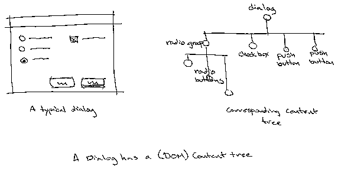
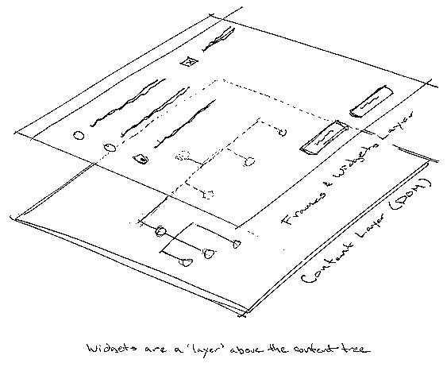
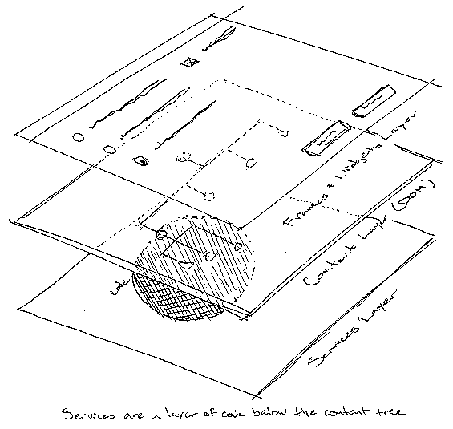
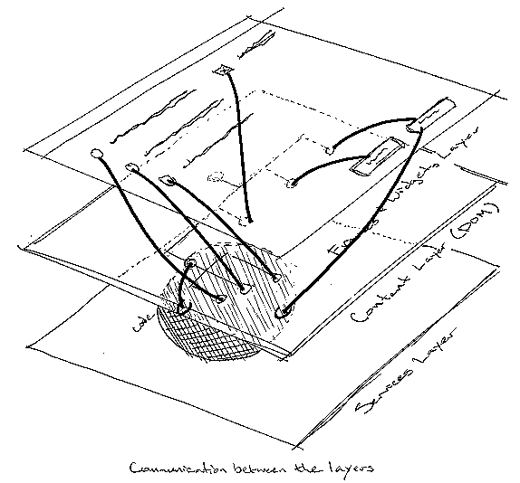
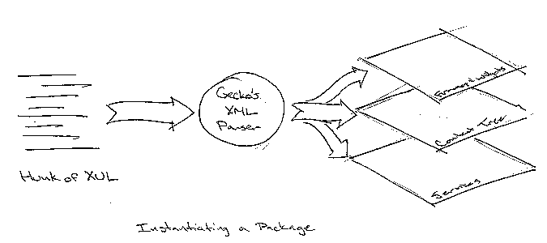

Document Status: Draft. Specific APIs will be added as they are suggested, developed, and refined. Change to the document is expected as discussions dictate.
The latest version of this document is available at
Please direct all comments and contributions to Scott Collins <scc@netscape.com> and/or news:netscape.public.mozilla.xpfe.
This document is all about the XPToolkit. It describes the motivations, design goals, architecture and some of the plans for its implementation. It is a living document (no matter how much I hate that phrase); it will be continually updated as we make decisions and learn more. There's more information about the XPToolkit at mozilla.org.
The XPToolkit is a collection of loosely related facilities, from which application writers can pick and choose, which provide a platform independent API to some commonly exploited platform-specific machinery, e.g., bringing up a dialog. Not all platform independent facilities fall under the XPToolkit. JavaScript, for example, is a distinct service. Not all the platform specific implementation details can be forced into the XPToolkit. Applications will still contain platform specific code; though they can minimize the amount by exploiting the XPToolkit.
One of the facilities we will provide is that of instantiating windows, dialogs, menus, or other hunks of user interface machinery from an XML description. The description will, hopefully, offer equivalent and broader power over the UI than currently supplied by HTML. Allowing UIs to be constructed entirely from XML and JavaScript significantly lowers the bar for UI builders. An application built on this service has the choice to expose it to end-users. This opens up many possibilities including, e.g., `downloadable chrome', personal customization, etc.
Making UIs as easy to construct as web pages will open up UI evolution to the same massively parallel development that has so richly benefitted open source code.
A client that doesn't overlap the services provided by the toolkit will have a (hopefully, itself portable) kernel of code that does all the non-UI things the app does (like speak http, or implement a database). Along side it, or wrapped around it will be a scriptable interface, e.g., as defined with the XPIDL and XPCOM. The script support provided by this interface will be sufficient to query and set any parameter, or issue any command, that the UI traditionally would have viewed, changed, or issued.
Somewhere accessible, stored in an application specific form, are hunks of UI description---streams of XML---corresponding to hunks of UI machinery. The app might store these descriptions as individual files; as resources; as database entries; or even remotely to be accessed through URLs. Whenever some piece of UI machinery must be instantiated, the app serves up a stream of XML to the toolkits UI poser; and the UI machinery comes into being.
This separation is, of course, older than the hills. It is the Model-View-Controller paradigm touted since Smalltalk days, and in many application frameworks since. Because the app kernel has no knowledge of any particular dialog, window, or menu, it is totally uneffected when the UI designer moves facilities from one dialog to another, or changes their form completely.
This facility alone, helps us build applications faster because our UI builders don't have to wait for our application engineers. We can do even more, however, if we don't `harden' the interface into the built application. The application can expose its interface descriptions to end-users at any level from selecting pre-built alternative `themes', installing entirely new facilities (e.g., from Netcenter), downloadable chrome, locally customizable chrome, right down to giving the user ultimate power over every pixel of the UI. What level to expose is entirely up the application.
We will make UIs as easy to build as web pages, making applications easier to write and more customizable along the way.
[[Add a link here to the `one true goals document', when it exists.]]
This section is a brief introduction to the parts that make up the XPToolkit. The parts and roles are intertwined, so an in-depth discussion is postponed until all the introductions have been made.
The XPToolkit is a collection of facilities that cooperate through a shared model of their environment. Much as the Document Object Model defines a shared environment that can be assumed by any script or service that wants to work with a document, the Application Object Model (AOM) defines the environment assumed by components of the XPToolkit. This is a major part of the overall XPToolkit architecture.
The AOM defines (some of) the objects and relationships that compose the UI and related services of an application built on the XPToolkit. This object model is a super-set of the DOM, as a running app is expected to have one or more documents whose content is accessed through a strictly DOM compliant API. In the same way that we provide access to the DOM API both internally, e.g., to compiled C or C++, and externally, e.g., to a Java applet or to a hunk of JavaScript, the AOM will be the universal way to work with the XPToolkit, for both compiled code and scripts.
It is key to the success of the XPToolkit that its components communicate with each other using only the common knowledge of the AOM. Requiring special access methods beyond the AOM will stifle cooperation among components, and may well rule out externally developed services. The strength of the AOM echoes that of the DOM: a well known public standard ensures broad cooperation.
The primary goal is of the AOM is to provide just enough structure for the components of the XPToolkit to find each other, and cooperate in providing a flexible UI. The AOM must expand on the DOM, but as little as possible. The simpler it is, the easier it will be to understand, to implement, and to use.
Widgets own pixels (and other presentation facilities, e.g., sound channels). They are the building blocks from which user interfaces are constructed. A radio-button is a widget, as is a menu, or a scrollbar. Widgets hook into the underlying object model (the AOM) to display and or control services. E.g., a button (which is a widget) labeled "Print", might be configured to send a "Print-Page" message to an underlying Browser-service.
Widgets can be simple or complex. They can even be composed of other widgets. A toolbar-widget, for example, might be a palette widget containing several button widgets.
Services are the work-horses of an application. Services perform actual application-specific tasks, such as printing, fetching a the data at the other end of a URL, or sequencing some DNA. Services are controlled and directed with messages, usually sent by widgets, e.g., when the user pushes the "Print" button.
The implementation of a service is typically ignorant of the details of its own user interface, if it even has one (e.g., it might be `faceless'). It merely responds to messages. In fact, the same service may be exploited by different UIs, even at the same time.
A package wraps it all up. A package is a complete facility: a user interface built from any number of widgets, and zero or more services to provide the functionality underlying that UI. There is a run-time object that represents the package. The package object `owns' the UI, and shares the services with other packages. That is, when a package goes away, for whatever reason, all the widgets that make up its UI also go away, and it releases its hold on any services it used. If those services are otherwise unused (i.e., no other packages share them), then they too are unloaded.
XUL (pronounced /zool/) is an XML description of a package. Given a stream of XUL (and implementations for the required widgets and services) the XPToolkit can instantiate a package into the running app. The application might store XUL descriptions anywhere, e.g., in files, database entries, static strings, or at the other other end of a URL.
XUL is discussed in depth in the mis-named and slightly dated documents XUI Language Spec, and XUI Window Language.
Widgets provide the pixels and feedback that make up a UI. Services provide the functionality that is controlled and displayed by that UI. Widgets and services communicate and cooperate through a shared underlying object model, the AOM. A package is a complete facility with a UI comprising any number of widgets, and functionality supplied by services. A package can be can be constructed from, or distilled into, a XUL description. A running application comprises many packages, each typically instantiated through XUL.
Now that we've met the primary cast of characters, we can delve deeper into their tangled relationships.
Gecko is the layout engine at the heart many of our new applications. These applications involve presenting XML and HTML documents. Gecko is the engine behind all our page-layout widgets. To that end, Gecko provides facilities for parsing XML and instantiating the corresponding object hierarchies. This is a key facility that the XPToolkit exploits to instantiate XUL-specified packages. The XPToolkit will, where possible, not duplicate facilities already available in Gecko.
[[list appropriate requirements the XPToolkit has on Gecko]]
A key notion of the XPToolkit is that any particular widget or service might be unknown to the application, i.e., not linked in. Such software components must be discoverable and loadable at runtime. And where possible, we want to write them only once.
This is where XPCOM comes in. Widgets and services implement XPCOM interfaces, allowing them to be discovered, loaded, and unloaded, arbitrarily at runtime. XUL descriptions may name particular widgets or services specifically (e.g., by CID), generically (e.g., by IID), or by some category scheme in between the two.
[[list appropriate requirements the XPToolkit has on XPCOM]]
A message is the means by which objects in the AOM, and the attached services and widgets pass around information. We use the term message instead of, e.g., `function-call' in the tradition of OOP texts, because we don't presume what means the objects use to get the information across. Typically, for one object to call a function of another, they must be linked together, and the first object must know the API of the second. Certainly, calling a specific function is one way, probably even the primary way, that one object sends a message to another. Eventually, a message almost always comes down to calling a function specific to that message. Before that point, however, a message might, itself, be an object passed into a universal `handle-message' function. It could be a script function, or a function whose interface was discovered through XPCOM. On the way from one place to another, a message may assume any or all of these forms.
Two distinct categories of messages are 'events' and 'commands'. An event is notification that something has happened, typically, input from the user or external hardware. A command is a directive to perform some action. For instance, the user presses the mouse button while the cursor is over button-widget (e.g., labeled "Print") on the screen. The OS generates a mouse-down event and sends it into the application. This event message traverses the application until, eventually, it reaches the button-widget, which reacts by redrawing itself appropriately. Similarly when the user releases the mouse button. At this point, the on-screen button-widget sends a message of its own: a command to the underlying service to perform some task, in this case to print.
A message, once sent, traverses the object tree until it is handled or it `falls off'. Many messages go directly from one object to another, e.g., a widget may directly send a command to a service. Sometimes, the sender doesn't know exactly who will actually handle a message. In these cases, messages trickle through the tree.
The document XPFE/App Command Architecture is a key resource to understanding the commands under the XPToolkit.
Note: some widgets aren't actually traditional Widget objects, e.g., menus and menu items. Though they are constructed in the same (or nearby) phase, and conceptually exist in the same layer. See XPToolkit Menu Facilities for further details of menus.
Services are the engines of the application. They are centers of functionality and scriptability. A service is a software component, typically implemented as an XPCOM object. If this is not feasible, e.g., when porting an extant app to the XPToolkit, you can provide an XPCOM interface that leads to functionality actually rolled into the app's primary code-body.
Services can always be shared by packages. When the last package using a particular service releases it, that service is unloaded. This is the default relationship encouraged by XPCOM, and particularly appropriate to this setting. Alternatively, some services (particularly, `stateful' services) may be multiply instantiated. For example, a browser service connected to a window. One instance of a browser might be instantiated for each open window, if the browser service needed to maintain instance-specific state.
[[provide some specific examples of services here]]
Scriptability is a key attribute of services. It is only the fact that they are scriptable, and/or have discoverable APIs, that allows arbitrary user interfaces to be attached to them. The better a service exposes its functionality through a scriptable API, the more flexibility app builders have in constructing a UI for that service.
Services will often provide `observable' attributes. For instance, a browser service might provide an observable `busy' attribute. As the UI is instantiated, a particular widget, in this case the throbber, may hook itself into this attribute, observing it. When the browser service becomes busy, it notifies all observers, including the throbber. The throbber starts animating. When the browser service is no longer busy, it again notifies all observers; and the throbber stops its animation.
[[list appropriate requirements the XPToolkit has on XPCOMConnect]]
So, given our new knowledge of the other components in the XPToolkit, the AOM is simply the sum of the central layer (the content tree), sandwiched between frames, widgets, and other UI components above, and face-less services below, and the links of observation and communication between them.
Packages are adequately described in the related sections. However it should be noted that some packages will come in a more degenerate form, that of a `native' package. A native package is a facility, invoked in the same way as the packages you are already familiar with, that lacks one or more of the elements normal packages have. For instance, an application will typically provide a native package that presents a print dialog. This print dialog is usually constructed from OS provided components, and doesn't naturally communicate through the AOM. The native print package provides an adaptor that renders the print dialogs results into a content tree for examination by the app or underlying service that provides the printing functionality.
In the initial implementation of this architecture, there is a tension that must be understood. XML is a scheme for constructing languages that are good at representing structure. In theory, the middle layer of the AOM is `the content layer'. That is, it is the layer that really contains the data, hopefully structured according to its true nature. HTML, is a language that, unfortunately, often mixes the `view' of the data (e.g., is it a menu or a scrolling list box) in with the content. This innappropriately unifies the model and the view; often severely limiting options. Because in our initial implementation, we use embedded HTML elements in our content to help us construct the right interface elements, we have brought this tension between model and view close to the surface for XPToolkit clients
The theory is that one can expect the content layer to provide a structure that is true to the data. However, because of the way we use HTML elements, this is not true globally. It is true `through the peephole'. One can expect to know that some particular node with a well known name or id exists, though its exact type may be unknown, and irrelevant. That node has direct children, and its direct children are the set of nodes that are interesting for some particular application.
The current layout and view system and our parser provide us with some challenges in making the right thing happen. For now, we face this by using the content layer for content to every extent that is affordable. When we have to squint and narrow our expectations, or step outside the bounds a little to make it work, we do so; remembering that focusing on providing a common API is what makes our toolkit `plug and play'.
As the `big picture', this section deserves to be first; however, it will make more sense if you are already familiar with the various components of the XPToolkit. Therefore, the best place for this section is right where you found it, following the discussions of the parts.
Before a package is born, it exists only as a XUL specification. This specification comprises an actual XUL content file and myriad associated CSS style sheets. When a package is needed, the application fetches the XUL specification and pumps it into the XPToolkit. The XPToolkit, in turn, uses Gecko's XML parser to instantiate the underlying content tree.
Before the package is ready to go, however, the associated widgets and services must be instantiated, according to the information in the content nodes and ultimately controlled by the CIDs and IIDs provided in the corresponding style sheets. As the objects are instantiated, they make the inter-layer connections for observing and message sending.
At last, all the objects have been created and connected. Now the application and/or underlying services get one last opportunity to modify the content tree (impacting widgets and services) before the UI is made visible.
In a running package, much state is held in the content tree, and some in the underlying services. As particular user-level commands become available, command nodes in the content model who have registered an interest with the service are notified. Widgets that represent those commands are, in turn, listeners on those content nodes and thus, receive their notification, allowing them to dim or highlight accordingly. Some widgets may observe state in the underlying service directly, e.g., the throbber observers the `busy' attribute in the underlying browser service, starting and stopping its animation with notification from the service.
Users interact with widgets, causing changes to the content tree, e.g., setting the value of a radio group, or actually issuing commands to the underlying service, e.g., to print or re-load.
In the meantime, other packages are being instantiated, running, and going away. The same package may be instantiated more than once simultaneously. The same package may be instantiated with a different XUL specification, providing a distinctly different UI. Some packages may work together, sending messages between themselves, e.g., a floating toolbar (package) might provide buttons that issue commands to the front window, which is actually owned by a different package.
For most dialogs, before the package is destroyed, the user-interface will be hidden (or released) and the application and/or underlying services get one last opportunity to examine the content tree, i.e., the results of the users input, and act on the findings. Now, and in all other cases, the package itself is released, which releases the UI (widgets, frames, et al) if it hasn't been already, the content tree, and underlying services. The UI and content tree are destroyed. Services, however, may have been shared by other packages. Such services are only unloaded when the last interested package releases them.
The application is no more than a collection of packages with overlapping lives. The functionality of the app is sliced into managable, scriptable, hunks called services. The UI is sliced into pieces, and facilities are presented by attaching the right piece of UI to the right services. The better componentized the services, and the more scriptable they are, the more flexible the UI can be.
[[The following sections provide (or will provide) examples, possibilities, and suggestions. They don't actually introduce any new features of the architecture; they merely provide deeper explanations and explorations of the details. Unfortunately, they're not done. Rest assured, the key themes of the architecture are presented above and in the cited external documents.]]
walk through bringing an XPToolkit-based app to life [[describe a simple text editing app]]
[[to be determined]]
[[to be determined]]
[[to be determined]]
The XPToolkit will supply a base set of widgets --- some or all of which may actually be implemented in Gecko, as part of Gecko's form requirements. The list currently includes at least the following (as specified in the "Required Widgets" document)
The clipboard service integrates the platform specific clipboard facility, if there is one, into the AOM. This gives other services, scripts, and widgets, full shared access to the OS clipboard. It is available even where the OS does not provide a clipboard facility.
The keyboard mapping service gives applications the power to arbitrarily map given keys to other keys, key-sequences, or messages. It's a reasonably straight-forward macro-like facility that can be exploited by applications, and at the applications discretion, by end users.
[[questionable, given time constraints]]
There are several things that, at first blush, you might think the XPToolkit should provide and were surprised to find it didn't. This section describes those things, and why the XPToolkit doesn't give them to you.
Abbreviations refer to their expanded form, unless the abbreviation is preferred.